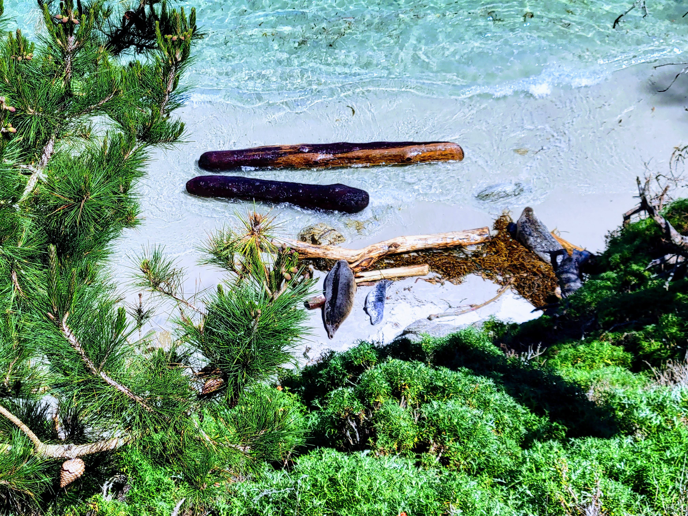

Places I've hiked with my English 1A class:

Chitactac Adams Heritage County Park was a cute little mini-hike to get our feet wet, so to speak. It has the 'Adams School' showcasing some local Ohlone/Costanoan history, petroglyphs, bedrock mortars, and woven baskets. I noted some interesting translation discrepancies from English to Spanish; where the Spanish version was a more accurate history, and the English version was a heavily-edited and sugar-coated one.
Pinnacles National Park hike was a strenuous and difficult one for me. I largely underestimated Pinnacles; it tested my physical and mental strength, but it was rewarding in the end. We got to experience going through the caves in a section that is open for a narrow window of time due to the bat population and preservation. It was an amazing experience to have! Pinnacles' steep climbs, unique views, caves, and condor sightings created a unique hiking experience I will never forget!
Point Lobos State National Reserve is one of the most magical places I've ever experienced. The coastal views, super-bloom aromas, sound of the ocean and marine life, along with that revitalizing fresh air; gave me a truly healing experience. I was enamored by the land, sea, and most adorable seals who were beached with the seal pups they recently birthed. I was filled with gratitude and amazement at having been able to witness this little piece of paradise.